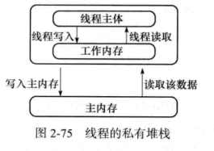
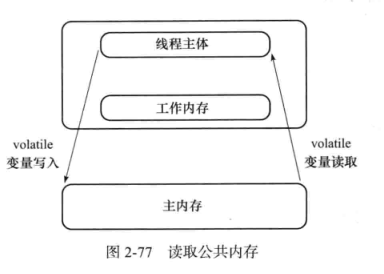

前言
说到volatile关键字，应该是个很古老的关键字，然而这是一个很关键的一个关键字，从暑假接触到开始，看了许多的文章，也渐渐有了一些自己的理解。就来讲讲volatile这个东西。参考：Java内存访问重排序的研究
volatile特性
总的来说，volatile具有两个特性，一个是可见性，一个是禁止指令重排序
可见性
关于可见性的，之前忘记在哪本书上截了一张图，讲的是工作内存和主内存的关系以及volatile的可见性实现。


以下是测试可见性的一个程序
public class volatileTest {
public static boolean flag = true;
static class Task implements Runnable {
@Override
public void run() {
int i = 0;
while (flag) {
i ++;
}
System.out.println("finished......");
}
}
public static void main(String[] args) throws InterruptedException {
new Thread(new Task()).start();
Thread.sleep(1000);
flag = false;
}
}
上述程序一眼望去，完全ok，1s后，控制台输出“finished……”，然而，事实是程序无法终止。其原因就是Task线程没有读取到主内存中已经修改的flag变量，换言之Task线程的工作内存中flag变量依然是true，一直处于while循环当中。
要让程序正常结束，给flag变量添加volaatile关键字即可
另外在测试时还碰到一个奇怪的现象，如果在while(flag) {}循环体中添加System.out.println()或者Thread.sleep()，那么无论volatile关键字添加与否，程序均可正常退出。经过查阅资料与自己理解，究其原因，是在于工作内存和主内存之间的数据交换是基于线程有空闲的时候，如果说只是while(flag){i++;}，那么就虚拟机就无法找到空闲的时间去进行数据交换，而对于Thread.sleep()和System.out.println(),即可进行内存数据的交换。
禁止指令重排序
还是先放张问题出现的情况吧：
public class volatileTest {
static int a = 0, a1 = 0;
static int b = 0, b1 = 0;
static class TaskA implements Runnable {
@Override
public void run() {
a = 1;
a1 = b;
}
}
static class TaskB implements Runnable {
@Override
public void run() {
b = 1;
b1 = a;
}
}
public static void main(String[] args) throws InterruptedException {
int time = 0;
while (true) {
Thread aTask = new Thread(new TaskA());
Thread bTask = new Thread(new TaskB());
aTask.start();
bTask.start();
aTask.join();
bTask.join();
System.out.println(time++ + ": a1 = " + a1 + "and b1 = " + b1);
if (a1 == 0 && b1 == 0) {
break;
}
a = 0;
a1 = 0;
b = 0;
b1 = 0;
}
}
}
以上代码经过测试，在执行到第100w+次时，程序结束。显然，按照正常逻辑不可能出现a1,b1均等于0的情况，然而它就是这样发生了，这简直比“墨菲定律”还不靠谱，你觉得不可能发生的事它都发生了，哈哈。其实这就是指令重排序做的梗。在机器看来，a=1和a1=b实际上是两个互不干涉的指令，于是它擅作主张，将a1=b提到了a=1之前执行。此时完整的执行过程是这样的:(a1=b, b=1, b1=a, a=1)。
说到指令重排序，其实涉及到的东西还是比较多的，所谓指令重排，顾名思义，重新编排指令执行顺序，java的JIT即时编译器也会有指令重排，其主要目的是在条件允许的情况下，执行之后的指令，以提高处理器的执行效率。
以上是指令重排的简单概念，为了实现禁止指令重排，JMM为此规定了一个happens-before的规则，happens-before的前后两个操作不会被重排序且后者对前者的内存可见，而对于具体的实现，则是通过了内存屏障（Memory Barrier）来实现。
LoadLoad屏障：对于这样的语句Load1; LoadLoad; Load2，在Load2及后续读取操作要读取的数据被访问前，保证Load1要读取的数据被读取完毕。
StoreStore屏障：对于这样的语句Store1; StoreStore; Store2，在Store2及后续写入操作执行前，保证Store1的写入操作对其它处理器可见。
LoadStore屏障：对于这样的语句Load1; LoadStore; Store2，在Store2及后续写入操作被刷出前，保证Load1要读取的数据被读取完毕。
StoreLoad屏障：对于这样的语句Store1;StoreLoad; Load2，在Load2及后续所有读取操作执行前，保证Store1的写入对所有处理器可见。它的开销是四种屏障中最大的。在大多数处理器的实现中，这个屏障是个万能屏障，兼具其它三种内存屏障的功能。
| 内存屏障 | 普通读 | 普通写 | volatile读同步块入口 | volatile写同步块出口 |
|---|---|---|---|---|
| 普通读 | LoadStore | |||
| 普通写 | StoreStore | |||
| volatile读同步块入口 | LoadLoad | LoadStore | LoadLoad | LoadStore |
| volatile写同步块出口 | StoreLoad | StoreStore |
当然以上内容为CPU中的指令，回到java volatile中，用张表格来说明一下（列代表第一个操作，行代表第二个操作）：
| 是否允许重排序 | 普通读写 | volatile读 | volatile写 |
|---|---|---|---|
| 普通读写 | 不允许 | ||
| volatile读 | 不允许 | 不允许 | 不允许 |
| volatile写 | 不允许 | 不允许 |
初见此表，必有疑惑。首先是一个读写的概念。例如a++这个操作，首先是取出a对应的地址中的值，再通过运算器进行加1操作，再写回内存。其中第一步称为读，第三步称为写。
比如第二行第四列，普通读不能与其之后的所有volatile写重排序
知识误区
原子性的问题：看到很多文章中都提到了这么一个问题，估计踩到这个坑的人不少，volatile修饰的变量无法保证原子性，所谓原子性，就如a++，分为读，运算，写，三个部分，在多线程下是不安全的，volatile也无法保证这三个操作的原子性。可以使用concurrent下的atomic实现原子性。
和synchronized的区别的问题：synchronized属于重量级锁，volatile非常适用于单线程写，多线程读的场景。volatile更多的是去解决一个可见性的问题，在多线程问题上还是有很大的局限性的。
使用场景
其实随着synchronized近几年的优化，volatile对于性能的提升没有这么大了，但作为java底层关键字，掌握当然是必须的。另外，在netty中，volatile也是有着大量的应用，主要是和读写锁，cas一起使用，大大降低了锁的粒度，提升了netty的性能，也是netty成为现在非常流行的通行框架的原因之一。还有就是上面提到的，单线程写多线程读的场景。